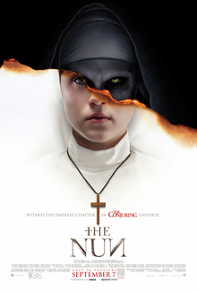

The Nun
The Nun is a 2018 American gothic supernatural horror film directed by Corin Hardy and written by Gary Dauberman, from a story by Dauberman and James Wan.
A priest with a haunted past and a novice on the threshold of her final vows are sent by the Vatican to investigate the death of a young nun in Romania and confront a malevolent force in the form of a demonic nun.
 Next movie.